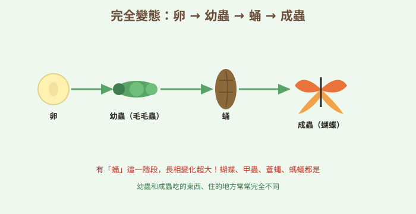
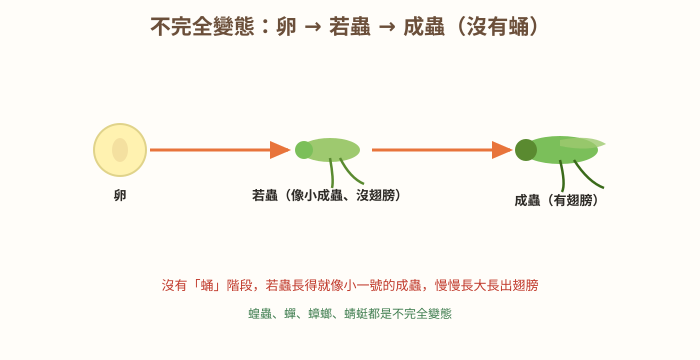
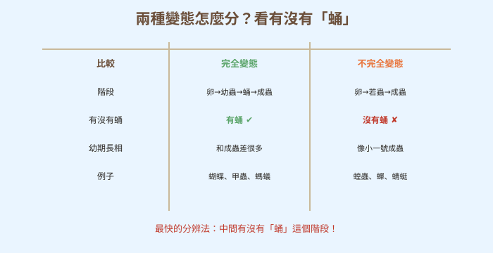

圖一（概念總覽圖）：完全變態

- 圖像目的
- 呈現完全變態的四階段與「有蛹」特徵。
- 圖中應出現的元素
- 卵→幼蟲（毛毛蟲）→蛹→成蟲（蝴蝶），箭頭連接。
- 必須標示的科學概念
- 四階段、有蛹、幼期與成蟲差異大。
- 圖說
- 「有『蛹』這一階段，長相變化超大！」
- AI 繪圖提示詞
- 溫暖手繪繪本風，橫向四階段：卵、綠色毛毛蟲、咖啡色蛹、蝴蝶，箭頭相連並標名稱。繁體中文。
- 避免畫錯的提醒
- 順序正確、蛹階段清楚；蝴蝶六足三體段。
💡 毛毛蟲變蝴蝶像換了個生命——但不是每隻昆蟲都要躲進「蛹」裡大改造喔！
| 適合年級 | 國小四年級 |
|---|---|
| 可銜接年級 | 四年級 → 國中生殖與生活史 |
| 主題分類 | 動物與昆蟲 |
| 核心概念 | 昆蟲的變態發育；完全變態與不完全變態的比較 |
| 關鍵詞 | 變態、卵、幼蟲、蛹、若蟲、成蟲、生活史 |
| 可銜接的國中概念 | 生物的生活史、生殖與成長 |
| 建議閱讀時間 | 約 18 分鐘 |
| 適合搭配的課堂活動 | 飼養觀察（蠶或蝴蝶）、生活史排序遊戲 |
小狐同學在學校的自然角認養了一隻胖胖的綠色毛毛蟲，取名叫「小胖」。他每天餵牠新鮮的葉子，看著小胖吃得津津有味、一天比一天胖。可是有一天，他來看小胖時嚇了一跳——小胖不見了！原本牠待的樹枝上，只掛著一個硬硬的、咖啡色、一動也不動的東西，很像一顆乾掉的小果子。
「小胖被誰吃掉了嗎？」小狐同學好緊張，「還是牠死掉，變成這個硬硬的東西了？」他天天守著那個怪東西，它就是不吃不喝、一動也不動，看起來真的像死了一樣。小狐同學都快放棄了，心想：「唉，小胖大概真的回不來了……」
沒想到過了兩個星期的某一天早上，那個硬殼突然裂開，慢慢地、慢慢地，一隻翅膀還皺皺的蝴蝶，居然從裡面爬了出來！牠停在枝頭，等翅膀展開變硬，最後「啪」地拍動漂亮的翅膀，飛走了。小狐同學看得目瞪口呆：「小胖……變成蝴蝶了？一隻胖胖的、只會爬的毛毛蟲，怎麼可能變成會飛的蝴蝶？牠們長得根本不一樣啊！這中間到底發生了什麼魔術？」
黑熊老師走過來，看著飛遠的蝴蝶，微笑著說：「小狐，你剛剛見證了昆蟲一生中最神奇的『變身魔術』——變態。小胖沒有死，牠是躲進『蛹』裡，把身體大改造，才變成蝴蝶的。不過有趣的是，不是所有昆蟲都要這樣大變身喔，有些昆蟲從小到大長得就很像。我們來看看昆蟲的變身有哪些不同的玩法！」
黑熊老師，毛毛蟲和蝴蝶長得完全不一樣，牠們真的是同一隻嗎？
是同一隻喔！這叫「變態」。像蝴蝶這種昆蟲的一生會經過四個階段：卵→幼蟲（毛毛蟲）→蛹→成蟲（蝴蝶）。中間有「蛹」這個大改造的階段，長相變化超大，我們叫它「完全變態」。
原來小胖躲在蛹裡是在大改造！那蛹裡面到底發生什麼事？
幼蟲在蛹裡把身體重新「組裝」，長出翅膀、變成成蟲的樣子。所以蛹看起來不吃不喝、一動也不動，其實裡面正忙著進行一場大工程呢。
哼，我知道！所有昆蟲小時候都是「毛毛蟲」那種樣子，長大後全都要躲進蛹裡大變身，才會變成成蟲啦！這是昆蟲的鐵則！
又講太滿囉，迷思怪獸。不是所有昆蟲都有蛹！像蝗蟲、蟬、蜻蜓，牠們的一生是：卵→若蟲→成蟲，中間「沒有蛹」。若蟲長得就像小一號的成蟲，慢慢長大、長出翅膀就好，這叫「不完全變態」。
喔！所以有沒有「蛹」，就是分辨兩種變態的關鍵？
沒錯！有蛹、幼期和成蟲長很不一樣的，是「完全變態」（蝴蝶、甲蟲、螞蟻、蒼蠅）；沒有蛹、若蟲像小成蟲的，是「不完全變態」（蝗蟲、蟬、蟑螂、蜻蜓）。
補充一個很酷的觀點：完全變態其實很聰明！因為幼蟲和成蟲長得不一樣，吃的東西、住的地方也常常不同——毛毛蟲啃葉子、蝴蝶吸花蜜。這樣親子就不會搶食物，是很成功的生存策略，所以世界上大部分的昆蟲都是完全變態喔。
與其用聽的，我們來實際飼養觀察！養蠶寶寶（完全變態）最方便，記錄牠從卵、幼蟲、結繭化蛹到變成蛾的過程；也可以做「生活史排序卡」，把各階段排對順序。飼養時要每天清潔、給新鮮桑葉，好好照顧小生命喔。
很多昆蟲一生會「變身」（變態），長相改變。分兩種：完全變態——卵→幼蟲→蛹→成蟲，有蛹、變化很大（像蝴蝶、甲蟲）；不完全變態——卵→若蟲→成蟲，沒有蛹，若蟲長得像小成蟲（像蝗蟲、蟬）。最快的分辨法就是：中間有沒有「蛹」。
昆蟲的成長常伴隨變態。完全變態經卵、幼蟲、蛹、成蟲四階段，幼蟲與成蟲在形態、食性、棲地上差異大（如毛毛蟲食葉、蝴蝶吸蜜），蛹期進行身體改造。不完全變態經卵、若蟲、成蟲三階段，無蛹期，若蟲外形近似成蟲、逐漸發育出翅與生殖能力。變態是昆蟲的生活史特徵，完全變態使親子減少競爭，是昆蟲繁盛的重要原因之一。
變態受荷爾蒙調控（如蛻皮激素、幼年激素），完全變態（holometabolous）具蛹期進行組織重塑；不完全變態（hemimetabolous）以漸進蛻皮發育。生活史反映生殖策略與生態區位分化：幼期與成期利用不同資源可降低種內競爭、提升存活。變態與蛻皮、外骨骼的限制有關。國中生物「生殖」「生物與環境」會延伸探討生活史、族群與適應。



（本篇分鏡場景插圖籌備中，以下為分鏡腳本；場景圖可依提示詞產出，作法同其他文章。）
| 適合年級 | 四年級 |
|---|---|
| 材料 | 蠶卵或蠶寶寶、新鮮桑葉、透氣飼養盒、放大鏡、觀察日記、色鉛筆、（生活史排序卡） |
觀察的時間（成長的不同階段）。
蠶的外形、大小、行為的變化。
飼養環境、食物（桑葉）、清潔方式一致。
| 階段 | 樣子（畫下來） | 觀察到的重點 |
|---|---|---|
| 幼蟲（蠶） | ||
| 蛹（繭） | ||
| 成蟲（蛾） |
蠶會經過卵→幼蟲（一直吃桑葉長大、蛻皮）→吐絲結繭化蛹→羽化成蛾的過程，這是「完全變態」。幼蟲（蠶）和成蟲（蛾）長相差很多、幼蟲吃桑葉而成蛾主要繁殖，中間有明顯的蛹（繭）階段。親手觀察能清楚看到「有蛹」的完全變態歷程。
⚠️ 安全提醒：善待小生命，每天餵食清潔、不隨意把玩或傷害；桑葉要洗淨擦乾、不噴農藥；對昆蟲或桑葉會過敏者改用觀察影片；觀察後洗手；蛾羽化後可野放到合適環境（避免放生外來種造成生態問題，最好詢問老師）。
👾 迷思說法：所有昆蟲小時候都是毛毛蟲，長大都要結蛹。
為什麼容易誤解：蝴蝶的故事最有名，就以為全部昆蟲都一樣。
✅ 正確說法：只有「完全變態」的昆蟲有蛹（蝴蝶、甲蟲）；「不完全變態」的昆蟲（蝗蟲、蟬）沒有蛹，若蟲長得像小成蟲。
可以怎麼驗證：觀察蝗蟲或蟑螂的成長，會發現牠們沒有蛹階段。
👾 迷思說法：毛毛蟲和蝴蝶是兩種不同的動物。
為什麼容易誤解：牠們長得完全不一樣。
✅ 正確說法：牠們是同一隻昆蟲的不同階段。毛毛蟲是幼蟲、蝴蝶是成蟲，中間經過蛹的大改造。
可以怎麼驗證：飼養觀察，會親眼看到同一隻從毛毛蟲變成蝴蝶/蛾。
👾 迷思說法：蛹一動也不動、不吃不喝，代表牠死掉了。
為什麼容易誤解：蛹外表靜止，看起來像死的。
✅ 正確說法：蛹沒有死，牠正在裡面進行身體大改造，是活的。時間到了就會羽化成成蟲。
可以怎麼驗證：耐心等待，蛹會裂開、成蟲爬出來。
👾 迷思說法：若蟲就是「還沒躲進蛹」的毛毛蟲。
為什麼容易誤解：把「幼蟲」和「若蟲」搞混。
✅ 正確說法：不一樣！「幼蟲」（如毛毛蟲）之後會結蛹（完全變態）；「若蟲」長得像小成蟲，不會結蛹，直接慢慢長成成蟲（不完全變態）。
可以怎麼驗證：比較毛毛蟲（幼蟲）和小蝗蟲（若蟲）的樣子與後續變化。
👾 迷思說法：完全變態比較「高級」，不完全變態比較「落後」。
為什麼容易誤解：覺得變化多就比較厲害。
✅ 正確說法：兩種都是成功的生存方式，沒有高低之分。完全變態讓親子不搶食物，不完全變態則發育簡單快速，各有優點。
可以怎麼驗證：觀察蝗蟲、蟬也活得很好、數量很多，就知道不完全變態同樣成功。
1. 「完全變態」的昆蟲，一生會經過哪四個階段？
(A) 卵→若蟲→成蟲 (B) 卵→幼蟲→蛹→成蟲 (C) 幼蟲→蛹→成蟲 (D) 卵→蛹→成蟲
答案：B。完全變態有卵、幼蟲、蛹、成蟲四階段。
2. 分辨完全變態和不完全變態，最關鍵是看有沒有？
(A) 翅膀 (B) 腳 (C) 蛹 (D) 觸角
答案：C。有蛹是完全變態，無蛹是不完全變態。
3. 下列哪一種昆蟲是「不完全變態」？
(A) 蝴蝶 (B) 獨角仙 (C) 蝗蟲 (D) 蜜蜂
答案：C。蝗蟲卵→若蟲→成蟲，無蛹。
4. 關於「蛹」，下列敘述何者正確？
(A) 蛹是死掉的幼蟲 (B) 蛹正在進行身體改造，是活的 (C) 蛹會一直吃東西 (D) 每種昆蟲都有蛹
答案：B。蛹期進行身體重組，是活的。
5. 完全變態對昆蟲的一個好處是？
(A) 長得比較快 (B) 幼蟲和成蟲吃不同食物，親子不搶食 (C) 不用吃東西 (D) 不會被吃
答案：B。食性與棲地分化減少競爭。
1. 完全變態和不完全變態，最大的不同是什麼？
完全變態有「蛹」階段、幼蟲和成蟲長很不一樣；不完全變態沒有蛹、若蟲長得像小成蟲。
2. 迷思怪獸說「所有昆蟲都要結蛹」，你要怎麼糾正牠？
只有完全變態的昆蟲有蛹；不完全變態的昆蟲（如蝗蟲、蟬）沒有蛹，若蟲直接長成成蟲。
3. 為什麼蛹看起來不動，卻不是死掉了？
因為蛹正在裡面進行身體大改造（重新組裝成成蟲的樣子），是活的，時間到就會羽化。
1. 甲蟲博士說完全變態「讓親子不搶食物」。你能舉例說明毛毛蟲和蝴蝶吃的東西、住的地方有什麼不同嗎？這對牠們有什麼好處？
毛毛蟲吃葉子、待在葉子上；蝴蝶吸花蜜、在花間飛。親子吃不同食物、活動範圍不同，就不會互相搶食物與空間，兩代都能得到足夠資源，提高存活機會。
2. 如果你在草叢裡發現一隻沒有翅膀、但長得很像小蝗蟲的蟲，你會猜牠是哪種變態的哪個階段？要怎麼確認？
牠很可能是「不完全變態」的「若蟲」（像小成蟲、還沒長翅膀）。可以持續觀察，看牠是慢慢長出翅膀變成蟲（不完全變態），還是會結蛹（那就是完全變態的幼蟲）。強調用後續變化來確認。
| 向度 | 待加強（1） | 通過（2） | 優秀（3） |
|---|---|---|---|
| 概念理解 | 混淆兩種變態 | 能以有無蛹分辨 | 能比較並說明生存策略 |
| 觀察與紀錄 | 紀錄零散 | 能記錄各階段 | 紀錄完整並正確排序 |
| 對待生命 | 粗魯對待 | 能妥善飼養 | 主動照顧並提醒他人愛護 |
| 檢核項目 | 結果 | 備註 |
|---|---|---|
| 科學概念是否正確 | ✅ | 完全/不完全變態階段、有無蛹、幼蟲與若蟲之別、食性分化，敘述正確。 |
| 是否符合年級理解程度 | ✅ | 四年級以飼養觀察切入，荷爾蒙調控留待國中。 |
| 是否有錯誤或過度簡化的比喻 | ✅ | 「變身魔術」比喻恰當，已澄清蛹非死亡、幼蟲與若蟲不同。 |
| 是否清楚區分觀察、推論與解釋 | ✅ | 以飼養觀察為據，解釋以變態發育。 |
| 圖像提示詞是否可能造成誤解 | ✅ | 階段順序、有無蛹、若蟲近似成蟲皆正確。 |
| 實驗是否安全 | ✅ | 提醒善待生命、桑葉洗淨、過敏替代、勿放生外來種。 |
| 是否需要補充資料來源 | ✅ | 對應 INd-Ⅱ-3、INb-Ⅱ-7；見教師補充。 |
| 是否適合轉成 HTML 網頁 | ✅ | 結構完整，含互動測驗與摺疊區。 |